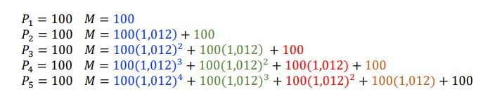
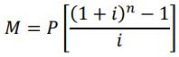

ANUIDADES
Anuidade é uma série de pagamentos ou recebimentos sucessivos a uma taxa de juros. Dentro do conteúdo de anuidades há alguns diferentes regimes para cada caso, que estudaremos a seguir.
CAPITALIZAÇÃO
São depósitos sucessivos, de mesmo valor, que geram uma soma a uma taxa de juros aplicada por diferentes períodos de tempo em cada depósito. Compreendendo melhor: A primeira parcela depositada terá um rendimento maior, porque está há mais tempo sobre a taxa de juros, enquanto a última parcela depositada não terá nem um rendimento, pois ela não passou por um período de tempo, como demonstra a imagem abaixo, que utiliza uma soma de juros compostos.
Soma de juros compostos, disponibilizada pela professora Dra. VALERIA ESPINDOLA LESSA, no material didático: MD1 - ANUIDADES, na página 2, disponível no SIGAA, para a turma de informática do segundo ano, de 2024, do IFRS, Campus Erechim.
Se analisarmos a imagem acima, é perceptível que temos a soma de uma progressão geométrica de termos finitos. O que nos leva a concluir que para termos o montante final é preciso apenas aplicar a fórmula da soma da PG, que adaptada para a capitalização é a seguinte:
M - Montante, soma de todas as parcelas;
P - Parcela de depósito;
i - taxa de juros na forma de número decimal;
n - período de capitalização de acordo com a taxa( se for 20% ao mês, o período deve ser em meses).
Segue exemplos:

Vale ressaltar que no EX2 a taxa está como: q=1,006, pois é a soma do 1 da fórmula, mais a taxa decimal de 0,006 que é igual a 0,6%. E no EX3, é igual, q=1,008 com o 1 da fórmula somado, e o i=0,008 e a taxa de 0,8% em número decimal.